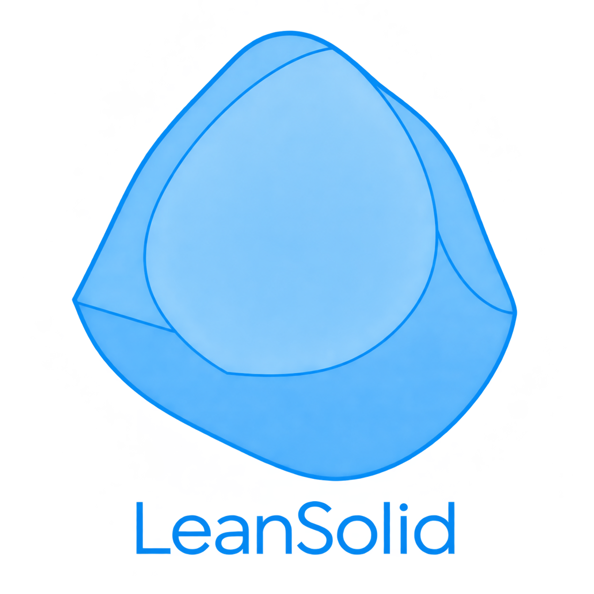

Constitutive laws
Scalar Hooke's law, elastic energy, and strain recovery under a positive Young's modulus.
AI4Solid project · Pre-alpha
Formalizing solid mechanics in Lean 4 and Mathlib. LeanSolid makes modeling assumptions explicit and checks derivations against reusable definitions.

Scalar Hooke's law, elastic energy, and strain recovery under a positive Young's modulus.
Small-strain kinematics, isotropic constitutive laws, compatibility, and Voigt notation.
Teaching reference · Brown ENGN 2240, Linear Elasticity
Finite-deformation kinematics, stress measures, balance laws, and hyperelasticity.
Teaching reference · Brown ENGN 2210, Continuum Mechanics
Weak equilibrium, energy principles, Galerkin estimates, and solvability under explicit assumptions.
The two Brown solid mechanics courses taught by Huajian Gao provide teaching references for these modules. Contributors can compare new lecture notes and other teaching materials with existing Lean proofs, verify derivations where the assumptions match, and register gaps for future formalization.
| Metric | Current | How it is counted |
|---|---|---|
| Lean Declarations | 1,791 | Named declarations with source ranges from library modules loaded by import LeanSolid, including definitions, theorems, structures and classes. |
| Verified Theorems | 1,285 / 1,285 | Verified / total named library theorems and lemmas. Lean checks transitive axiom dependencies against propext, Classical.choice and Quot.sound. |
| Formalized Papers | 0 complete · 4 partial | Coverage of papers and memoirs recorded in Landmark Results. Standalone research companions have separate verification records. |
| Landmark Results | 4 | Classical results registered with a Lean proof in the Landmark Results index. |
| Lines of Lean | 18,100 | Lines containing code in LeanSolid.lean and LeanSolid/**/*.lean. |
| Build Status |
|
GitHub Actions runs lake build on the default branch. |
| Open Problems | 5 | Registered questions in the OpenProblems Registry, including entries with partial progress. |
Find the module entry points and the scope of the current library.
Follow classical results from their sources to their Lean proofs.
Explore standalone research applications with their own verification instructions.
Install Elan, then run these commands. The repository pins its Lean and Mathlib versions.
git clone https://github.com/AI4Solid/LeanSolid.git
cd LeanSolid
lake exe cache get
lake buildFurther work includes linear elasticity and boundary-value problems, fracture and energy release, traction–separation laws at interfaces, and energy-based stability and bifurcation.
Read the changelogLeanSolid was created and is maintained by Siyuan Song. To propose a formalization, discuss a proof, or collaborate, open a GitHub issue.
Open a GitHub issue